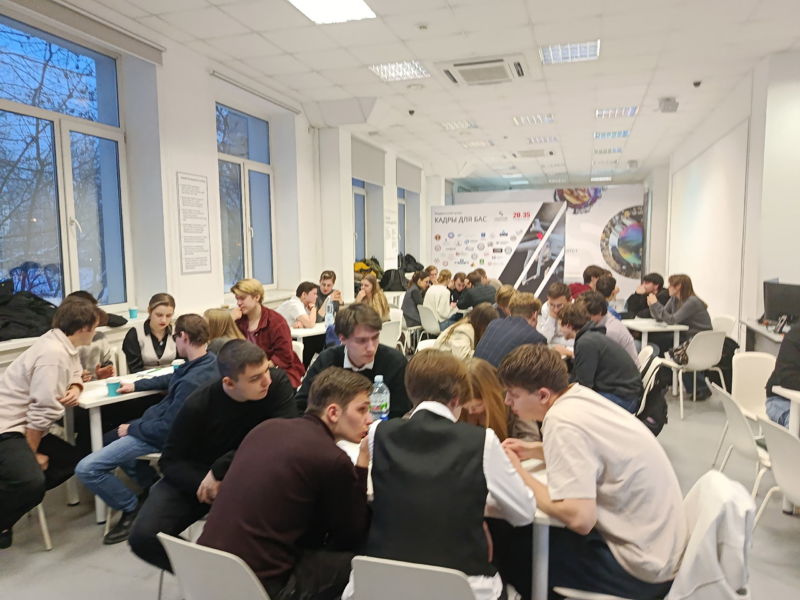
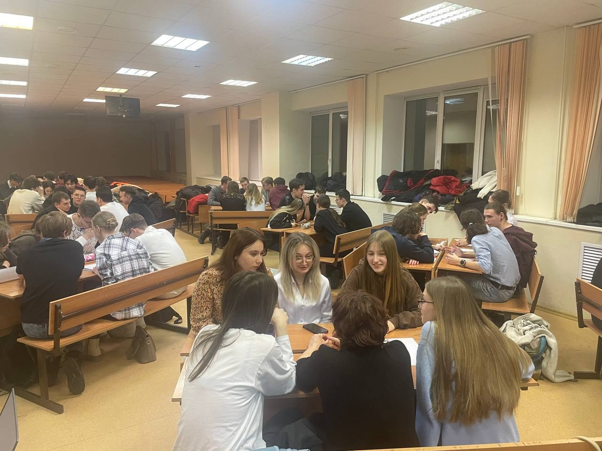

Интеллектуальное движение Самарского университета
Наш клуб объединяет студентов всех институтов и факультетов — от программистов и авиастроителей до юристов и филологов. Мы регулярно проводим турниры по Спортивному «Что? Где? Когда?», «Брейн-рингу», «Своей игре» и «Эрудит-квартету».
Здесь развивают логику, скорость мышления и находят верных друзей по команде. Стать частью клуба может любой студент!

